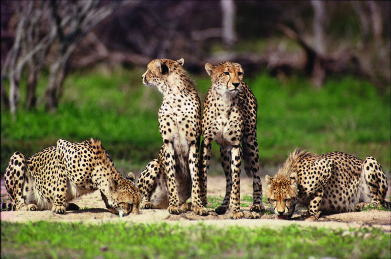

The fastest animals in the world
FASTEST ANIMAL IN THE AIR: Peregrine Falcon
Maximun speed: 242 mph (389 km/h)
Peregrine falcon is the fastest aerial animal, fastest animal in flight, fastest bird, and the overall fastest member of the animal kingdom.
The peregrine achieves its highest velocity not in horizontal level flight (When flying horizontally, these falcons are able to reach a mere 55 mph), but during its characteristic hunting stoop. The key to their speed is their deadly dive, in which they're able to exceed 200 mph by folding in their wings and plummeting at their prey with astonishing accuracy. Peregrine falcons don't hit the ground when they dive. At the last second, a peregrine falcon will use its wings to upward.

FASTEST ANIMAL ON THE LAND: Cheetah
Maximun speed: 75 mph (121 km/h)
Fastest land-animal, fastest feline, the cheetah can accelerate from 0 to 60 mph (96.6 km/h) in under three seconds. That’s better than a sports car!
However, the cheetah is not a long distance runner and they can only maintain its top speed for around 500 meters. It takes a huge amount of their energy to run that fast, so if they fail to catch a prey, it could be fatal.
FASTEST ANIMAL IN THE AIR: Black Marlin
Maximun speed: 82 mph (132 km/h)
Several physical features make black marlins fast. Their long, thin, sharp bills - ideally shaped to slice through the water quickly - and rigid pectoral fins are exceptionally aerodynamic. Plus, they can deftly maneuver their crescent-shaped tails to create power.